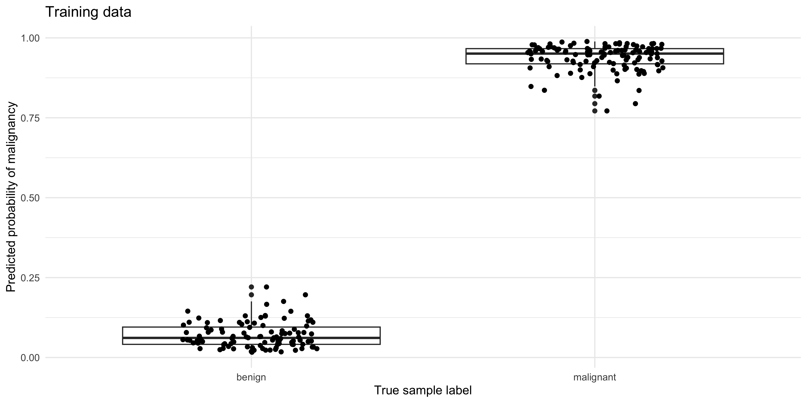
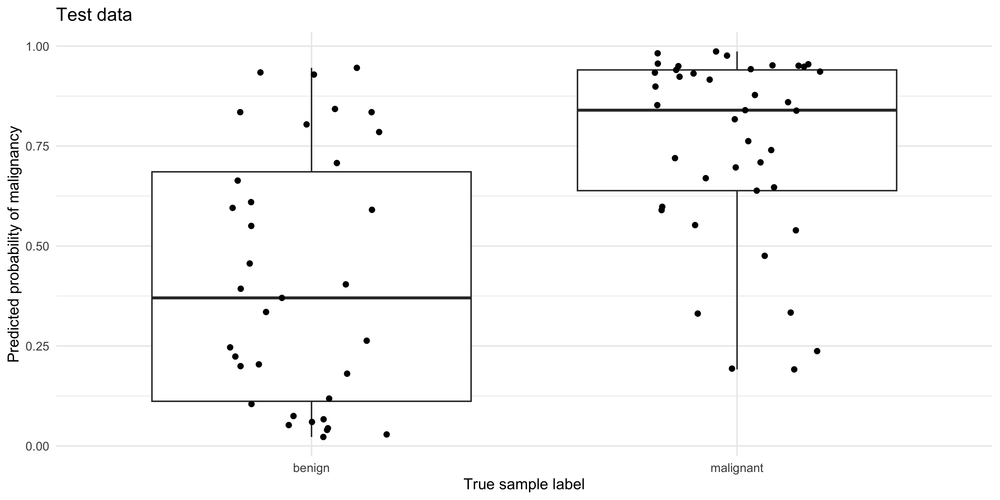
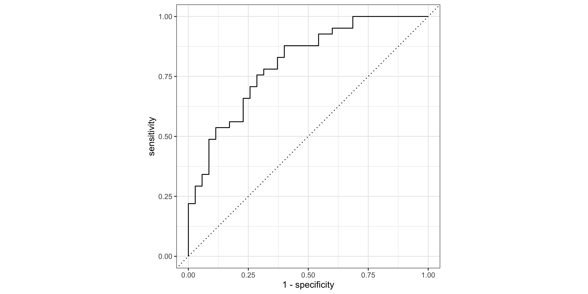
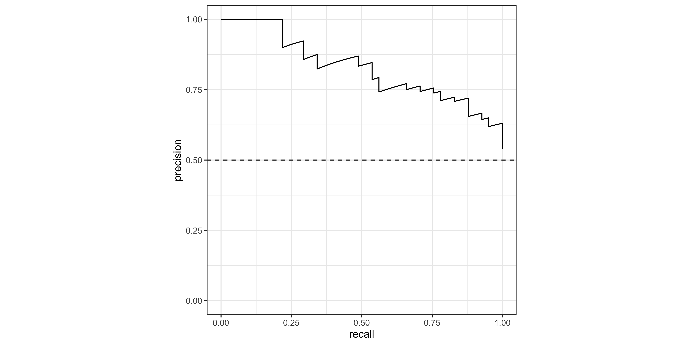
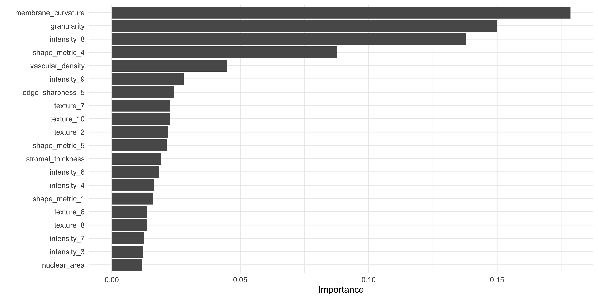

library(tidyverse)
library(readxl)
library(tidymodels)
library(xgboost)
theme_set(theme_minimal())Part 2
Background
We loaded and explored the histology imaging-derived data in ML Part 1. Through this process we found:
the data requires log-transformation
there is little separation in malignant vs benign samples when clustering via principal components analysis
using linear modeling, several imaging features show significant correlation with tumor status (benign vs malignant)
Given these findings, we have reason to believe that a machine learning algorithm may be successful in predicting malignant vs benign tumor status.
By contrast, if no differences are seen in PCA or simple testing of linear models, the chance of building a reliable classification model is much lower.
Aim
To train a classification model using the ‘xgboost’ algorithm (extreme gradient boosting), which is a class of algorithms that uses decision trees (similar to ‘random forest’).
Note, our primary aim here is not to understand the individual features that contribute to the benign vs malignant classification, but simply to build a robust classification tool.
Load libraries
Load data
Preprocessed data from ML Part 1 is stored in data_processed/
dat_wide_log <- read_xlsx('data_processed/tumor_data_log_wide.xlsx')Set seed
‘Reproducible randomness’. This ensures everyone using this tutorial gets the same results.
set.seed(42)Format data
Training the ML model requires the outcome (malignant status) encoded as a factor.
Data types and file types
Data types aren’t preserved in Excel, csv or tsv format files. They are however preserved in .Rdata and .Rds files.
dat_wide_log %>% select(1:5) %>% str()tibble [300 × 5] (S3: tbl_df/tbl/data.frame)
$ donorid : chr [1:300] "d001" "d002" "d003" "d004" ...
$ status : chr [1:300] "malignant" "malignant" "malignant" "benign" ...
$ cell_size : num [1:300] -0.769 0.469 0.68 0.669 1.113 ...
$ cell_density: num [1:300] -0.1844 0.1517 0.6682 0.2399 -0.0523 ...
$ nuclear_area: num [1:300] -0.0568 -0.1693 -0.2268 -0.3735 -0.3104 ...Re-establish status as a factor:
dat_wide_log <- dat_wide_log %>%
mutate(status=factor(status))Drop donorid from the training data. It encodes no useful infromation for training a model.
data_final <- dat_wide_log %>% select(-c(donorid))Split test & train
The default is to split the data into training (75%) and test/hold-out (25%). We stratify by status, to ensure roughly equal numbers of benign and malignant samples in the test and training data
split_cl <- initial_split(data_final, strata = status)Extract the test and training data to separate objects
train_cl <- training(split_cl)
test_cl <- testing(split_cl)Check the balance of the status classes (malignant vs benign), remembering that ROC curves are more reliable when classes are balanced.
train_cl %>% count(status)# A tibble: 2 × 2
status n
<fct> <int>
1 benign 104
2 malignant 120test_cl %>% count(status)# A tibble: 2 × 2
status n
<fct> <int>
1 benign 35
2 malignant 41This gives reasonably even splits.
Recipe
The data recipe stores the model parameters, and the data pre-processing steps. These steps will be performed on any data input to the ML training process.
rec_cl <- recipe(status ~ . , data = train_cl ) %>%
step_zv(all_numeric_predictors()) %>%
step_normalize(all_numeric_predictors()) %>%
step_dummy(all_nominal_predictors()) The model algebra indicates we want to predict the status column (aka ‘y’ / ‘outcome’) using all available columns (denoted by . ). The data argument train_cl is provided to define the structure of the data (i.e., the colnames for all the features we have available).
The tidymodels package has a number of step_() functions that allow us to chain data transformation instructions together using the pipe %>%, similar to a dplyr ‘chain’.
step_zv() - step_zero_variance removes any features that have 0 variance, and therefore encode no information that can help to predict the outcome (which is ‘status’, in this case).
step_normalize() performs a scaling normalization. First it centres the data each feature by subtracting the mean from every value, and then transforms the centred data into z scores (i.e., dividing each value by the standard deviation for that feature).
step_dummy() - converts nominal (character) data such as sex, into ‘dummy’ numeric variables, to allow their use in the ML training data, which is strictly numeric.
Note we have already log-transformed the data in our exploratory data analysis steps in ML Part 1. However, if we had not done this, we could use step_log() before step_normalize().
Hyper-parameters
Hyper-parameters are pre-determined settings that govern how the model learns, and the model ‘architecture’ - akin to the depth and breadth of parameters that can be modified during training. Different model classes have different types of hyper-parameters. In this case for the xgboost algorithm, we pre-determine the number of decision trees that are ‘grown’ during the training steps, the depth ( = maximum number of branch-points) of those trees, and the ‘learning rate’ - which governs the magnitude of updates to the model during training.
We also determine the machine learning engine (‘xgboost’) and the mode (‘classification’) as opposed to ‘regression’.
xgb_params <- boost_tree(trees = 500,
tree_depth = 20,
learn_rate = 0.01) %>%
set_engine("xgboost") %>%
set_mode("classification")One of the great features about tidymodels is the simplicity of using different model classes. All that is required is to edit the set_engine() command to your model of choice! The pre-processing and evaluation steps remain unchanged, and this removes the need to learn a separate R library for each ML engine!
Workflow
Now we package the data pre-processing recipe and the hyper-parameters into a workflow, ready for training. This workflow construct ensures that all steps - data pre-processing, model specification and tuning, are pre-defined in a single object.
wf_xgb <- workflow() %>%
# model outcome and features & pre-processing steps:
add_recipe(rec_cl) %>%
#hyper-parameters, machine learning model type, and mode:
add_model(xgb_params)
Hyper-parameter tuning
Even though we are not tuning hyper-parameters in this simple workflow, the tuning process can be captured in the workflow object, as we will see later.
Models within models?
In this tutorial ‘models’ appear in two contexts
The model algebra (similar to a linear model equation), that specifies what our outcome is (y), and the predictor features we want to use. This is specified in the
recipe()step.The machine learning model (in this case xgboost), which is specified in the workflow using
add_model().
Train your model!
We provide the workflow and the input data. fit() performs the model training steps. This should take ~30-60 seconds on a standard laptop.
fit_cl <- fit(wf_xgb, data = train_cl)Predict the test set!
Apply the newly trained model to predict the malignant status in the original train_cl training data, and the hold-out test_cl dataset. Here we set the type argument to ‘prob’, to generate probabilities of each class, rather than discrete labels (0 or 1).
These probabilities will be used directly for plotting ROC and PR curves (below), and rounded for other diagnostic values.
pred_train <- predict(fit_cl, train_cl, type = 'prob') %>%
bind_cols(train_cl)
pred_test <- predict(fit_cl, test_cl, 'prob') %>%
bind_cols(test_cl)Evaluate
Round probabilities
First a column of predicted class (discrete) values are generated by rounding the predicted probability of the malignant class
pred_train <- pred_train %>%
mutate(.pred_class=if_else(round(.pred_malignant)==1,
'malignant',
'benign')) %>%
relocate(.pred_class, .before = status) %>%
mutate(.pred_class=factor(.pred_class))
pred_test <- pred_test %>%
mutate(.pred_class=if_else(round(.pred_malignant)==1,
'malignant',
'benign')) %>%
relocate(.pred_class, .before = status) %>%
mutate(.pred_class=factor(.pred_class))
The rounding decision threshold
Creating PR and ROC curves requires varying the probability threshold at which a sample is labelled as TRUE (malignant) or FALSE (benign). What is the default decision threshold for the round() function?
Boxplot
Compare the predicted probability of malignancy to the true sample labels
pred_train %>%
ggplot(aes(y=.pred_malignant, x=status)) +
geom_boxplot() + geom_jitter(width=0.2, height=0) +
ylab('Predicted probability of malignancy') +
xlab('True sample label') +
ggtitle('Training data')
pred_test %>%
ggplot(aes(y=.pred_malignant, x=status)) +
geom_boxplot() + geom_jitter(width=0.2, height=0) +
ylab('Predicted probability of malignancy') +
xlab('True sample label') +
ggtitle('Test data')
Confusion matrix
pred_train %>% conf_mat(truth = status,
estimate = .pred_class,
dnn = c('Predicted','Truth (TRAINING Data)')) Truth (TRAINING Data)
Predicted benign malignant
benign 104 0
malignant 0 120pred_test %>% conf_mat(truth=status,
estimate = .pred_class,
dnn = c('Predicted','Truth (TEST Data)')) Truth (TEST Data)
Predicted benign malignant
benign 21 6
malignant 14 35What do you notice about the performance of the model on the training, vs the test data?
Accuracy
The accuracy is the sum of the correct predictions divided by the total number of samples, where 1 = perfect accuracy.
pred_train %>% metrics(truth = status, estimate = .pred_class)# A tibble: 2 × 3
.metric .estimator .estimate
<chr> <chr> <dbl>
1 accuracy binary 1
2 kap binary 1pred_test %>% metrics(truth = status, estimate = .pred_class)# A tibble: 2 × 3
.metric .estimator .estimate
<chr> <chr> <dbl>
1 accuracy binary 0.737
2 kap binary 0.461Curves
Creating ROC and PR curves require the predicted class probabilities rather than discrete labels.
The roc_curve() and pr_curve() functions from the yardstick package (part of the tidymodels stable) are very handy for calculating the true-positive and false-positive rates as the decision threshold decreases.
roc_tbl <- roc_curve(pred_test, truth = status, .pred_malignant,
event_level = 'second')
pr_tbl <- pr_curve(pred_test, truth = status, .pred_malignant,
event_level = 'second')For a quick look at performance, ROC and PR curves can be plotted using the autoplot() function (ggplot2 geoms can be added on for customization):
roc_tbl %>% autoplot() 
pr_tbl %>% autoplot() + geom_hline(yintercept = 0.5,lty=2)
Area under the curve
yardstick also contains roc_auc() and pr_auc to calculate the area under each curve type. Note that the ‘event_level’ argument is the category that we consider ‘TRUE’ (in this case ‘malignant’, which is the second level in the status factor).
# AUROCC
roc_auc(data = pred_test, truth = status, .pred_malignant, event_level = 'second') # A tibble: 1 × 3
.metric .estimator .estimate
<chr> <chr> <dbl>
1 roc_auc binary 0.804# AUPRC
pr_auc( data = pred_test, truth = status, .pred_malignant, event_level = 'second') # A tibble: 1 × 3
.metric .estimator .estimate
<chr> <chr> <dbl>
1 pr_auc binary 0.827Feature Gain
‘Gain’ is a measure of the contribution of each feature to the accuracy of an xgboost model. Understanding the relative contribution of each feature is helpful if we want to create a smaller / lighter model using only the most important predictors, for example. This is also an important aspect of ‘explainable AI’ (xAI) /‘interpretable machine learning’. The vip package (‘variable importance plot’) has a vip() function for creating the characteristic horizontal bar charts:
#Extract fitted xgboost model
xgb_fit <- extract_fit_parsnip(fit_cl)$fit
# Plot Gain ('variable importance plot' - vip)
vip::vip(xgb_fit, num_features = 20)
What do you notice about the most important features in this model, when compared to our original data exploration work in ML Part 1 using lm_test()?
Save output
Let’s save the recipe rec_cl, and pred_test output from the model, to compare with a ‘tuned’ model in the next step.
save(
#training & testing data:
train_cl, test_cl,
#recipe object:
rec_cl,
#predictions on test data:
pred_test, file='data_processed/ml_pt2_objects.Rda')